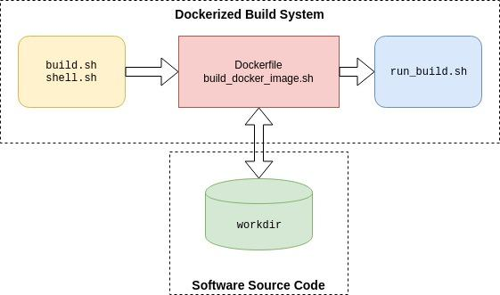

Dockerizing A Build System
Please see the published version of this article on opensource.com here.
After creating a few build systems using Docker recently, I think I have a decent, repeatable approach that's worth writing down. These build systems were used for generating loadable software images for embedded hardware as well as for compiling machine learning algorithms.
The approach discussed here is about how to create or organize the build system in a way that makes it easy to use and maintain. It's not about the tricks needed to deal with dockerizing any particular software compilers or tools. This approach applies to the common use case of building software by software developers who will be our end users. The build system itself will be abstracted away from our end users so that they can focus on the software.
Why Dockerize A Build System
-
Focus: I just want to focus on writing my application. When I say "build", I just want the toolset to build my code and give me the binary files to load. I don't want to spend time troubleshooting the build system. In fact, I'd rather not know or care about the build system.
-
Identical build behavior: Whatever the use case, I want to ensure that the entire team uses the same versions of the toolset and gets the same results when building. Otherwise we are constantly dealing with the case of "It works on my PC but not yours". Using the same toolset version and getting identical output for a given input source file set is critical in a team project.
-
Easy setup and future migration: While a detailed set of instructions can be provided to everyone to install a toolset for a project, chances are someone will get it wrong. Or there could be issues due to how each person has customized their Linux environment. This can be further compounded by the use of different Linux distributions across the team. The issues can get uglier quickly when it comes time for moving to the next version of the toolset. Using Docker and the guidelines here, the setup, use and migration to newer versions will be easier.
Dockerizing the build systems I use on my projects has certainly been valuable in my experience as it has alleviated the problems discussed above. There can still be issues due to the Docker installation itself and network configuration, especially if you have to work in a corporate environment involving some complex proxy settings. But at least there are now fewer build system problems to deal with.
How to Dockerize a Build System
I've created a tutorial repository you can clone and examine later. I'll be walking through all the files in the repository here. The build system is deliberately trivial (it's just gcc) in order to keep things simple and focus on the architecture of a build system.
Build System Requirements
We focus on two key aspects that are desirable in a build system:
-
Standard build invocation: We want to be able to build code by pointing to some work directory whose path is
/path/to/workdir. We want to invoke the build simply as:
./build.sh /path/to/workdir
Let's assume that the output is also generated somewhere within /path/to/workdir to keep the example architecture simple for the sake of explanation. (Otherwise, we'd just be increasing the number of volumes exposed to the docker container which is not difficult, but more cumbersome to explain.)
-
Custom build invocation via shell: In addition to the standard
build.shto invoke the toolset, sometimes, we need to be able to use the toolset in unforeseen ways. Eventually, some of these could be added as options tobuild.shif needed. But I always want to be able to get to a shell where I can invoke toolset commands directly. In our trivial example, let's say I sometimes want to try out differentgccoptimization options to see the effects. To achieve this, I want to simply invoke:
./shell.sh /path/to/workdir
And it should get me to a bash shell inside the container with access to the toolset as well as my workdir so I can experiment as I please with the toolset.
Build System Architecture
Given the above basic requirements, we architect the build system as shown:

At the bottom, we have the workdir representing any software source code that needs to be built by our software developer end users. Typically, this workdir will be a source code repository. The end user can manipulate this source code repository in any way they want before invoking a build. For example, if using git for version control, they could "git checkout" the feature branch they are working on, and add or modify files. This keeps the build system independent of the workdir.
The three blocks at the top collectively represent the dockerized build system. The left-most (yellow) block at the top represents the scripts (build.sh and shell.sh) that the end user will use to interact with the build system.
In the middle (the red block) is the Dockerfile and the associated script build_docker_image.sh. The development operations people (you and I in this case) will typically execute this script and generate the docker image. (In fact, we'd be executing this many, many times until we get everthing working right, but that's another story...) And then distribute the image to the end users such as through a docker trusted registry. The end users will need this image. In addition, they will clone the build system repository (i.e. one that is equivalent to the tutorial repository).
The run_build.sh script on the right is a script that is executed inside the docker container when the end user invokes either build.sh or shell.sh. I'll explain these scripts in detail next. The key here is that the end user does not need to know anything about the red or blue blocks, or how Docker works in order to use any of this.
Build System Details
Next we examine the tutorial repository's file structure which maps to this architecture. I've used this prototype structure for relatively complex build systems, so its simplicity is not a limitation in any way. Below, I've listed the tree structure of the relevant files from the repository. The dockerize-tutorial folder could be replaced with any other name corresponding to a build system. From within this folder, we invoke either build.sh or shell.sh with the one argument which is the path to our workdir.
dockerize-tutorial/
├── build.sh
├── shell.sh
└── swbuilder
├── build_docker_image.sh
├── install_swbuilder.dockerfile
└── scripts
└── run_build.sh
Note that I've deliberately excluded the example_workdir in the above, which you'll find in the tutorial repository. Actual source code would typically reside in a separate repository and not be part of the build tool repository. It was included in the tutorial repository so that we didn't have to deal with two repositories in the tutorial.
In case you want to follow along with the tutorial (and have Docker installed), you'd want to first build the docker image swbuilder:v1 with:
cd dockerize-tutorial/swbuilder/
./build_docker_image.sh
docker image ls # resulting image will be swbuilder:v1
But it's not necessary if you're only interested in the concepts as I'll be explaining all the files eventually.
In the tutorial, you'd invoke build.sh as:
cd dockerize-tutorial
./build.sh ~/repos/dockerize-tutorial/example_workdir
The code for build.sh is listed below. This script instantiates a container from the docker image swbuilder:v1. It performs two volume mappings: one from the example_workdir folder to a volume inside the container at path /workdir, and the second from dockerize-tutorial/swbuilder/scripts outside the container to /scripts inside the container.
docker container run \
--volume $(pwd)/swbuilder/scripts:/scripts \
--volume $1:/workdir \
--user $(id -u ${USER}):$(id -g ${USER}) \
--rm -it --name build_swbuilder swbuilder:v1 \
build
In addition, the build.sh also invokes the container to run with your username (and group which is assumed to be the same) so that you will not have issues with file permissions when accessing the generated build output.
If you look at shell.sh, you'll note that it is identical except for two things. build.sh creates a container named build_swbuilder while shell.sh creates one named shell_swbuilder. This is so that there are no conflicts in case you invoke either script while the other one is running.
The other key difference between the two scripts is the last argument. build.sh passes in the argument build while the shell.sh passes in the argument shell. If you look at the Dockerfile that is used to create the docker image, the last line contains the following ENTRYPOINT. This means that the the "docker container run" invocation above will result in executing the run_build.sh script with either build or shell as the one input argument.
# run bash script and process the input command
ENTRYPOINT [ "/bin/bash", "/scripts/run_build.sh"]
Examining run_build.sh, we see that it simply uses this input argument to either start the bash shell or invoke gcc to perform the build of our trivial helloworld.c project. A real build system would typically invoke a Makefile and not run gcc directly.
cd /workdir
if [ $1 = "shell" ]; then
echo "Starting Bash Shell"
/bin/bash
elif [ $1 = "build" ]; then
echo "Performing SW Build"
gcc helloworld.c -o helloworld -Wall
fi
You could certainly pass more than one argument if your use case demands it. For the build systems I've dealt with, usually the build is for a given project with a specific make invocation. In the case of a build system where the build invocation is complex, you can have the run_build.sh call a specific script inside workdir that the end user has to write.
A Note About The scripts Folder
You may be wondering why the scripts folder is located deep in the tree structure rather than at the top level of the repository. Either approach would work, but I didn't want to encourage the end user to poke around and change things there. So keeping it deeper was a way to make it more difficult to poke around. Also, I could have added a .dockerignore file to ignore the scripts folder as it doesn't need to be part of the docker context. But since it's tiny, I didn't bother.
Concluding Remarks
While the approach is simple, I've used it for a few rather different build systems now and found it to be quite flexible. The aspects that are going to be relatively stable (e.g. a given toolset which changes only a few times a year) are fixed inside the docker image. The aspects that are more fluid are kept outside the docker image as scripts. This allows us to easily modify how the toolset is invoked by updating the script and pushing the changes to the build system repository. All the user needs to do is to pull the changes to their local build system repository, which is typically quite fast (unlike updating a docker image). The structure lends itself to having as many volumes and scripts as are needed while abstracting the complexity away from the end user.
Comments
Comments powered by Disqus